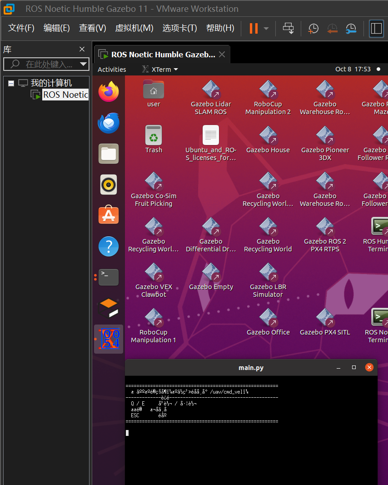
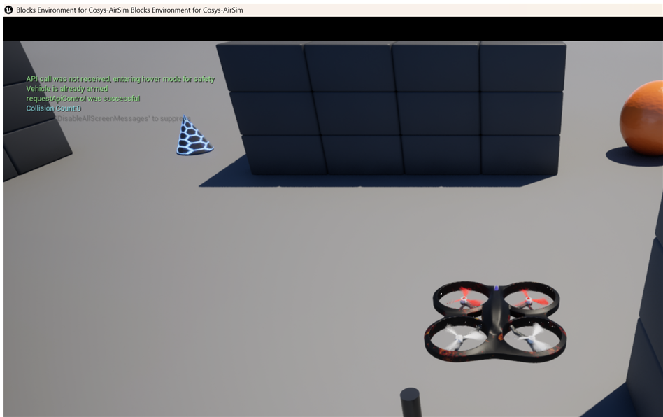

无人机键盘控制（uav_keyboard_control）
任务①「无人机仿真 + 键盘控制」的 ROS 侧实现：把终端按键转换为机体系速度指令，
发布到 /uav/cmd_vel，由 carlair_ros_bridge 连仿真器执行。仿真/坐标换算/安全限幅
集中在桥接层，键盘、规划器、神经网络控制器共用同一条指令通道。
1. 运行架构
终端按键 ──► uav_keyboard_control ──/uav/cmd_vel──► carlair_ros_bridge ──► CarlaAir/AirSim
(raw 模式读键) (geometry_msgs/Twist) (坐标换算+执行) (无人机)
2. 按键映射
机体系（x 前 / y 左 / z 上）：
| 按键 | 动作 | Twist 分量 |
|---|---|---|
W / S |
前进 / 后退 | linear.x = ±horiz_speed |
A / D |
左移 / 右移 | linear.y = ±horiz_speed |
R / F |
上升 / 下降 | linear.z = ±vert_speed |
Q / E |
右转 / 左转 | angular.z = ±yaw_rate |
| 松开 | 悬停 | 全零 |
ESC |
退出 | — |
Q/E 的方向遵循 AirSim 机体系 yaw_rate 约定（Q=+yaw_rate 机头右转）。
3. 编译与运行
# 终端 1：桥接（连仿真 + 执行 + 自动起飞悬停）
source ~/bridge_ws/devel/setup.bash
roslaunch carlair_ros_bridge main.launch
# 终端 2：键盘控制
source ~/bridge_ws/devel/setup.bash
roslaunch uav_keyboard_control main.launch
把焦点放在键盘控制终端，按 W/A/S/D/R/F/Q/E 操控，松开即悬停，ESC 退出。
4. 实现要点
4.1 终端 raw 模式
Linux 终端默认行缓冲（要按回车），用 termios+tty 进入 raw 模式即可单键即时响应：
with RawKeyReader() as reader: # __enter__ 切 raw，__exit__ 恢复
key = reader.get_key(timeout=0.03) # select 非阻塞读一个字符
with 语句保证 Ctrl-C 或异常退出时也能恢复终端设置，不会把用户的终端卡在 raw 模式。
4.2 按键 → 速度：纯函数
key_to_cmd(key, horiz, vert, yaw) 把按键映射为 (vx, vy, vz, wz)，
step_once 再打包成 geometry_msgs/Twist。两者都不依赖 ROS/终端，
可在无 ROS 的机器上单元测试（tests/test_keyboard_local.py，35 项）。
4.3 松开即悬停
节点主循环 30 Hz，每轮循环发布一条 Twist：读到按键就发该方向速度，没读到（松开/未知键）就发全零；按键不锁存，要连续运动必须持续按键（自动化时即"定频重复注入"，见 7.6）。桥接层的
cmd_vel_sub 有「超过 cmd_timeout 无指令自动悬停」的安全保护，这里再叠加一层
显式零速度，双保险防止无人机失控。
5. 与视口内置 WASD 的关系
CarlaAir 视口内置键盘操控（任务①的「仿真」部分），本模块提供 ROS 侧键盘控制
（任务①的「键盘控制」部分）。两者可对比验证：视口 WASD 直接驱动仿真器，
本模块走 键盘 → /uav/cmd_vel → 桥接 → 仿真器 的完整 ROS 链路，正是后续
规划器、神经网络控制器的通用入口。
6. 效果图
键盘控制演示（录屏转 GIF，W 前进 / A 左移 / D 右移 / R 上升 / Q 右转 机动，第三人称视角）：

7. 本机实测记录
7.1 运行环境
| 项 | 配置 |
|---|---|
| 宿主机 | Windows + Unreal Engine 5.5 + Cosys-AirSim 3.3（Blocks 环境） |
| 客户机 | VMware 虚拟机，Ubuntu 20.04.6 LTS（内核 5.15） |
| ROS | ROS Noetic（Python 3.8.10） |
| 工作区 | ~/uav_ws（catkin） |
| 仿真器地址 | 192.168.49.1:41451（本次实测环境的值，即 VMware NAT 下 VMnet8 的宿主机地址；换环境请用 ipconfig 重新确认） |
| AirSim RPC 监听 | 本构建（Cosys-AirSim 3.3）无需修改 settings.json：监听地址由顶层键 "LocalHostIp" 决定，默认空字符串即监听所有网卡。依据与实测见 7.1.1 |
7.1.1 关于 RPC 监听地址
原文写的是「settings.json 必须含 "ApiServerAddress": "0.0.0.0"，默认只监听 127.0.0.1」。
经核对本机构建的源码与二进制，这两句都不成立，特此更正：
- 键名不对。 本构建读取的是顶层键
"LocalHostIp"，不是ApiServerAddress。 源码依据Plugins/AirSim/Source/AirLib/include/common/AirSimSettings.hpp：
//by default we spawn server at local endpoint. Do not use 127.0.0.1 as default below
//because for docker container default is 0.0.0.0 and people get really confused why things
api_server_address = settings_json.getString("LocalHostIp", "");
api_port = settings_json.getInt("ApiServerPort", RpcLibPort);
佐证：该构建的 Binaries/Win64/UnrealEditor-AirSim.dll 里能查到字符串
LocalHostIp 与 ApiServerPort，但查不到 ApiServerAddress。
-
「默认只监听 127.0.0.1」没有依据。 上面两行的默认值是空字符串， 紧邻的源码注释还明确写了「不要默认用 127.0.0.1，因为 docker 容器场景默认是 0.0.0.0」。 也就是默认就监听所有网卡。
-
实测与之一致。 宿主机
netstat -ano | findstr 41451显示0.0.0.0:41451， 客户机侧直连该端口即可建立 TCP 连接。
结论：把「虚拟机连不上」归因于 ApiServerAddress 是错的，本机实测中从未真正需要这一项。
如果确实要显式限定监听地址，应写成顶层键 "LocalHostIp": "0.0.0.0"。
7.2 运行步骤
前置：按 环境搭建与连接 配好虚拟机 ROS 环境；
按 桥接模块 的 2.1 节在宿主机启动 CarlaAir 仿真器，
等终端输出 CarlaAir is ready.（此时 41451 端口就绪）。
仿真器窗口不要最小化，否则 AirSim 取相机会阻塞。
最初的本机实测是用一个自写的控制脚本（负责起飞并爬升到 15 m）配合桥接层完成的， 那个脚本不属于本仓库。下面给出只用仓库内组件的等价步骤。
# ① 客户机：桥接层
export ROS_MASTER_URI=http://localhost:11311
source /opt/ros/noetic/setup.bash
source ~/uav_ws/devel/setup.bash
# <宿主机IP> 换成仿真器所在机器的地址（Windows 下用 ipconfig 查看，
# 桥接模块文档中的示例为 192.168.94.1）
# auto_takeoff 默认为 true：桥接层会 takeoff() 并 hover()，起飞后悬停在约 1 m
roslaunch carlair_ros_bridge main.launch host:=<宿主机IP>
# ② 客户机：把无人机送到 15 m 高空
# /uav/goal 是 ENU（z 向上为正），桥接层飞抵该点后自动悬停，
# 并把 /uav/status 置为 GOAL_DONE
rostopic pub -1 /uav/goal geometry_msgs/Point "{x: 0.0, y: 0.0, z: 15.0}"
rostopic echo -n 1 /uav/odom/pose/pose/position # 确认 z ≈ 15
# ③ 客户机：另开一个终端，键盘控制（作业要求的 launch 启动方式）
export ROS_MASTER_URI=http://localhost:11311
source /opt/ros/noetic/setup.bash
source ~/uav_ws/devel/setup.bash
roslaunch uav_keyboard_control main.launch
# 在弹出的 xterm 窗口里按 W/A/S/D/R/F/Q/E 操控，松开悬停，ESC 退出
关于
auto_takeoff：它的语义是「起飞并悬停」——桥接层源码里就是sim.takeoff()+sim.hover()，并不会自动升到 15 m；想让无人机到 15 m， 必须另外下发目标点（如上面第 ② 步）或速度指令。 若把它设为false，则无人机根本不会起飞，需要自己补上起飞动作。
7.3 实测结果
桥接层环境自检 5/5 通过：
[通过] airsim 包可用 -- 已导入
[通过] 连接仿真器 192.168.49.1:41451 -- confirmConnection 成功
[通过] 读取位姿 -- pos_enu=(-0.00, 0.00, -0.69) yaw=90.0°
[通过] 相机取帧 front_rgb -- 尺寸 640x480
[通过] 激光雷达点云 lidar1 -- 点数 8192, x∈[-71.4, 93.6] z∈[-0.4, 22.5]
自检结果: 5/5 通过
/uav/odom 发布频率实测 19.999 Hz（设计值 20 Hz）。
键盘闭环验证（用伪终端模拟真人按键，注入协议与脚本见 7.6）。 下面是最初一次运行的位姿记录——当时用的是"单次写入 + 保持"协议，由 7.6.1 的源码分析可知该协议下一个字节只产生一条指令，因此这组数据只用来证明整条链路有效、位置确实发生变化，不能当作定量指标（定量结论见 7.4、7.6）：
[test] 节点已在伪终端中启动 (pid=22254)
[test] 按键 前进 W 3.0s / 左移 A 2.5s / 后退 S 2.5s / 右移 D 2.5s / ESC 退出
按键前 (x, y, z) = ( 3.6e-07, 2.2e-07, 15.145) ← 已按 7.2 第 ② 步送到 15 m
按键后 (x, y, z) = ( 0.389, -0.403, 15.071) ← 水平移动约 0.56 m，高度保持
位置发生实际变化，证明「键盘 → /uav/cmd_vel → 桥接层 → 仿真器」整条链路有效。
7.4 性能评价
| 指标 | 实测值 | 说明 |
|---|---|---|
/uav/odom 发布频率 |
19.999 ~ 20.24 Hz | 桥接层环境自检实测；另用 rostopic hz /uav/odom 复测为 20.010 Hz（min 0.041 s / max 0.055 s） |
| 键盘节点指令发布频率 | 30 Hz | 由 rate/publish_hz 设定。这是设定值，不能当作端到端响应延迟的实测值 |
| 指令水平速度 | 2.0 m/s | 由 control/horiz_speed 决定，可用参数覆盖 |
| 单次按键脉冲的水平位移 | 约 0.20 m（1 条非零指令） | 单次写入一个 W 字节：节点只在该轮循环发布一条非零指令，随后回落全零（源码见 7.6.1）。数字为评审在另一台机器（Ubuntu 20.04 + Noetic + Blocks/AirSim）的对照测试结果 |
| 20 Hz 定频注入 3 s 的位移 | 约 4.56 m（60 条非零指令） | 同上；注入频率 20 Hz、测量时段 3 s，等效平均速度约 1.5 m/s（低于设定 2.0 m/s，差额来自桥接层控制周期与加减速过程） |
| 遥控稳定性 | 松开即悬停 | 双重保护：节点显式发零速 + 桥接层 0.5 s 超时悬停 |
关于「按键响应延迟」：原表写的「< 30 ms」是用 30 Hz 轮询周期反推出来的， 既不是实测值，本身也和 30 Hz（周期 33 ms）矛盾，已删除。 要得到真实延迟，需要给按键打时间戳、再和
/uav/cmd_vel首帧的到达时刻对比， 本机没有做这项测量，因此不给出数字。
7.5 实测截图
键盘控制窗口。main.launch 通过 launch-prefix="xterm -e" 拉起，
窗口标题为 main.py，黑底白字即是键位帮助：

仿真器中无人机自动起飞至 15 m 悬停。AirSim 叠加层显示
requestApiControl was successful、Vehicle is already armed、Collision Count:0：

7.6 按键闭环的复现方法
7.6.1 先看清语义：一个字节只产生一条速度指令
src/air/uav_keyboard_control/scripts/keyboard_control.py 的主循环：
def spin(self):
with RawKeyReader() as reader:
while not rospy.is_shutdown():
key = reader.get_key(timeout=0.03) # 没按键时返回 None
if key == "\x1b": # ESC 退出
break
self.pub.publish(self.step_once(key)) # 每轮循环发布一条 Twist
self.rate.sleep() # 30 Hz
- 每一轮循环发布一条
Twist：读到键就发该方向速度，没读到键（None）就发全零； - 因此写入一个字节 = 一条非零指令，约 33 ms 后的下一轮循环就回落到零速。
按键不是锁存的：写一次
W并不会让飞机持续前进，只会"推一下"。
这一点由评审在另一台机器上实测确认（Ubuntu 20.04 / ROS Noetic / 本机 Blocks+AirSim）：
| 注入方式 | 收到的非零 /uav/cmd_vel |
水平位移 |
|---|---|---|
单次写入 W |
1 条 | 约 0.20 m |
以 20 Hz 重复写入 W、持续 3 s（60 次） |
60 条 | 约 4.56 m |
本页早期版本写的是「每个按键写一次字节、保持 2.5~3 s，节点在这段时间内持续发布该方向速度」—— 这是错的（作者当时误以为按键会被锁存），已删除；早期按该协议得到的位移数字 也不再作为定量指标。
7.6.2 两种可复现协议
| 协议 | 注入方式 | 注入频率 | 测量时段 | 预期观测 |
|---|---|---|---|---|
| A 单次脉冲 | 只写一个 b"w" |
一次 | 写入后 1.0 s 内的位姿差 | 1 条非零指令；位移约 0.20 m |
| B 定频注入 | 循环写 b"w" |
20 Hz | 连续 3.0 s（共写入 60 次） | 60 条非零指令；位移约 4.56 m |
测量方法（两条协议通用）：
- 客户机先按 7.2 启动桥接层与键盘节点，确认无人机已在目标高度悬停；
- 测量时段首尾各取一次位姿：
rostopic echo -n1 /uav/odom/pose/pose/position，两者相减即水平位移； - 同时统计指令条数核对"写入次数 → 非零指令条数"：
rostopic echo -p /uav/cmd_vel/linear/x，数其中!= 0的样本条数。
注意：桥接层
cmd_timeout有"超时自动悬停"保护，定频注入的间隔要明显小于它 （默认 0.5 s），20 Hz（50 ms）远小于该阈值。
7.6.3 注入脚本（pty + 定频重复写入，仅用标准库）
保存为 kb_inject_test.py，在已 source 工作空间的客户机上运行：
python3 kb_inject_test.py --mode pulse # 协议 A
python3 kb_inject_test.py --mode repeat --hz 20 --seconds 3 # 协议 B
点击展开 kb_inject_test.py（纯标准库，无第三方依赖）
#!/usr/bin/env python3
# -*- coding: utf-8 -*-
"""用伪终端(pty)把按键按固定频率"敲"进 uav_keyboard_control，模拟真人连续按键。
为什么要定频重复写入：节点主循环每轮只发布一条 Twist（见文档 7.6.1），
写一次字节只"推一下"；要让飞机持续运动，必须按固定频率重复写。
用法：
python3 kb_inject_test.py --mode pulse # 协议 A：单次脉冲
python3 kb_inject_test.py --mode repeat --hz 20 --seconds 3 # 协议 B：20 Hz 定频
"""
from __future__ import print_function
import argparse
import os
import pty
import select
import sys
import time
CMD = ["rosrun", "uav_keyboard_control", "main.py"]
def main():
ap = argparse.ArgumentParser()
ap.add_argument("--mode", choices=("pulse", "repeat"), default="repeat")
ap.add_argument("--key", default="w")
ap.add_argument("--hz", type=float, default=20.0)
ap.add_argument("--seconds", type=float, default=3.0)
ap.add_argument("--boot-wait", type=float, default=6.0, help="节点初始化等待 (s)")
args = ap.parse_args()
pid, fd = pty.fork()
if pid == 0: # 子进程：节点本体
try:
os.execvp(CMD[0], CMD)
except Exception as exc: # noqa: BLE001
sys.stderr.write("exec failed: %s\n" % exc)
os._exit(1)
print("[test] 节点已在伪终端中启动 (pid=%d)" % pid)
time.sleep(args.boot_wait) # 等节点初始化并打印启动信息
chunks = []
def drain(seconds):
"""在 seconds 秒内持续把子进程输出读走（保持伪终端不被写满）。"""
end = time.time() + seconds
while time.time() < end:
r, _, _ = select.select([fd], [], [], 0.02)
if not r:
continue
try:
data = os.read(fd, 4096)
except OSError:
return False
if not data:
return False
chunks.append(data)
return True
drain(1.0)
key = args.key.encode("ascii")
if args.mode == "pulse":
print("[test] 协议 A：单次写入 %r，测量时段 1.0 s" % args.key)
os.write(fd, key)
drain(1.0)
else:
period = 1.0 / args.hz
count = int(round(args.seconds * args.hz))
print("[test] 协议 B：%r 以 %.1f Hz 重复写入 %d 次，测量时段 %.1f s"
% (args.key, args.hz, count, args.seconds))
t0 = time.time()
for i in range(count):
os.write(fd, key)
nxt = t0 + (i + 1) * period
drain(max(nxt - time.time(), 0.0))
print("[test] 定频注入结束，实际用时 %.2f s" % (time.time() - t0))
# 松开：不再写字节，节点下一轮循环自动发全零
drain(1.0)
try:
os.write(fd, b"\x1b")
except OSError:
pass
drain(0.5)
try:
os.close(fd)
except OSError:
pass
print("----- 键盘节点输出 -----")
sys.stdout.write(b"".join(chunks).decode("utf-8", "replace"))
print("----- 输出结束 -----")
if __name__ == "__main__":
main()
8. 参考
本文档在编写过程中使用了 AI 大模型辅助（资料核对、文档起草、问题排查）。
文中运行环境、命令与实测数据均来自本机实际运行记录：桥接层环境自检 5/5 通过、
/uav/odom 发布频率实测 19.999 Hz；键盘闭环的位姿记录与两种注入协议（单次脉冲 / 20 Hz 定频）见第 7 节，其中「单次脉冲 ≈ 0.20 m、20 Hz 定频 3 s ≈ 4.56 m」为评审在另一台机器上的对照复现结果，本页据此更正了先前关于"按键锁存"的错误描述；
对应的终端输出与截图已随本页一并提交（第 7 节）并被评审逐条核对过；
作者对提交内容的正确性与完整性负全部责任。